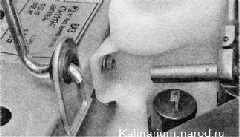

Бачок стеклоомывателей снятие и установкаСнятие 1. Подготавливаем автомобиль к выполнению работы. 2. Отсоединяем колодки проводов от электронасосов стеклоомывателей, предварительно пометив колодки, подсоединенные к выводу « + ». Если в бачке много незамерзающей жидкости, то с целью экономии следует снимать бачок стеклоомывателя, не отсоединяя от электронасосов трубки. 3. Торцовым ключом на 8 мм отворачиваем гайку переднего крепления бачка. 4. Отведя трубки в сторону, тем же ключом отворачиваем гайку заднего крепления бачка. 5. Поднимаем бачок. 6. Через заливную горловину сливаем жидкость в канистру. 7. Отсоединяем трубки от насосов и снимаем бачок. Установка Устанавливаем бачок в обратной последовательности. Заполняем его омывающей жидкостью. |